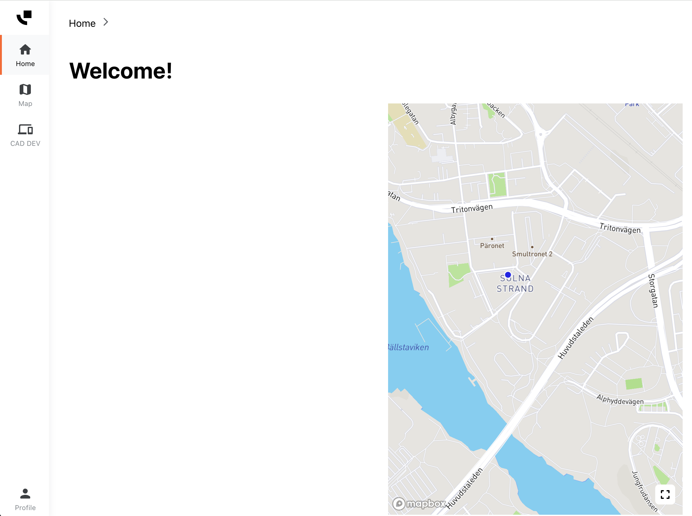
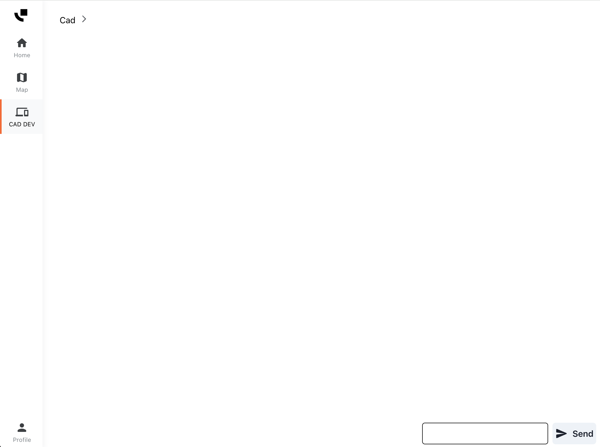
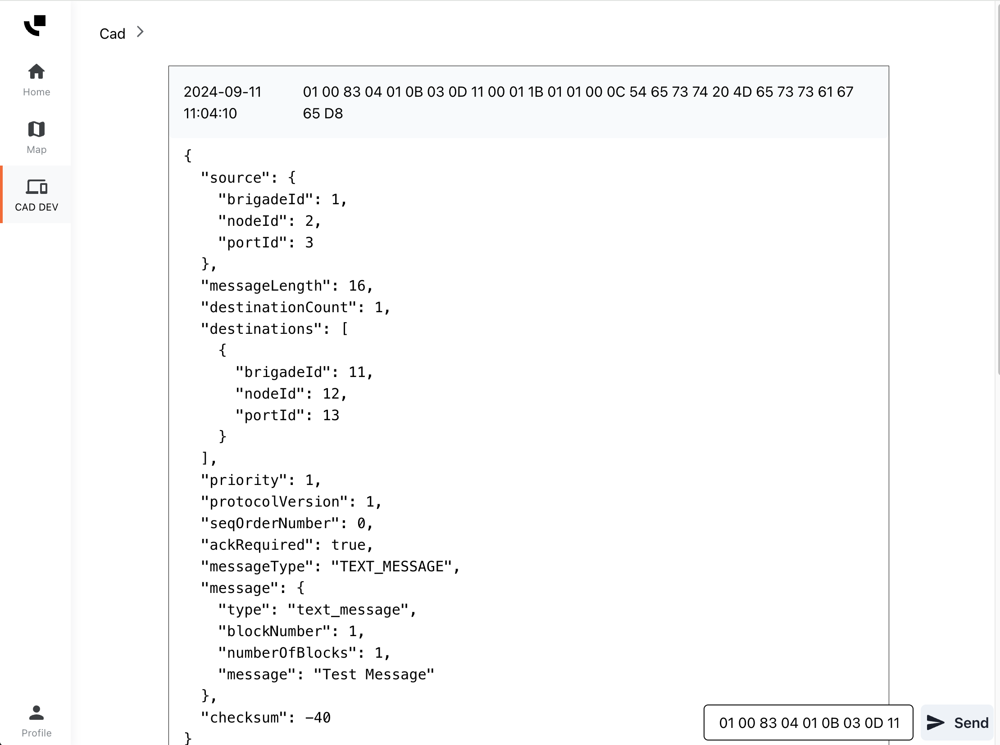

Central Services integrations¶
This article describes the available integrations for Central Services.
Dispatch (CAD)¶
Central Services can integrate against a Computer Aided Dispatch (CAD) system. This allows the CAD to dispatch missions, messages and requests to be supplied to Mobile Device Terminals (MDT) running Vehicle Services. Additionally, Central Services will forward logs, messages and other requests back to the CAD.
There are several ways this can be achieved depending on the use case:
GD92: Central Services hosts a GD92 node, including a Router and Message Transfer Agent. The transport is done using a WebSocket secured by TLS, the message format being raw binary GD92 data in both directions (Central Services to CAD and CAD to Central Services).
HTTP client: Central Services can run a HTTP client and connect to a remote server to retrieve mission information, and also supply data back. This can be achieved using the JSON or XML formats, using REST APIs or Websockets, with a large set of authentication methods. Due to variety of server implementations, this setup is out of the scope of this article, please contact us at support@evam.life if you are interested in this solution.
Other: Please contact us at support@evam.life to discuss your use case, we are always interested in new collaborations.
GD92 websocket¶
In this setup, the GD92 node in Central Services can be reached through a Websocket over TLS, using OAuth2 as authentication protocol.
Please follow those steps to get started with this integration:
You need a Central Services account to authenticate. Please send a mail at support@evam.life with the subject “Central Services access for GD92 websocket” using your work email. In this mail, specify the email address for this Central Services user, this mail address must have the same domain as your work email.
Your request will be processed, and if granted your Central Services user will be created and a temporary password will be sent back to your work email. You will also be provided with the URL to the Central Services instance and other details you will need to access the websocket.
Login in Central Services using the provided URL. You will be prompted for a password change, make sure to use a complex password and save it in a secure location. It will not be possible to retrieve it if lost, but we can reset it if needed.
Once the password change has been achieved, you should be in the Central Services web portal:
Central Services web portal

In Central Services, applications are organized in the bar at the left of the screen. You can see the applications your user has access to there.
Note the “CAD DEV” application, open it.
Central Services web portal

The page displays a log of all messages received from the CAD connected to Central Services. It should be empty for now, and in the futurer you can always go back to this state by refreshing the page.
Now, you should connect to the GD92 websocket and send GD92 messages - if successful they will show in the interface.
Achieving this is dependent on the stack used by your CAD system backend and you should adhere to its best practices in terms of websocket connection and OAuth2 usage. You can find below a basic example “CAD MTA”, written in Python 3. This code connects to the GD92 socket and listens to incoming messages, then echoes them back upon reception.
The following dependencies should be installed for this code to run:
oauthlib
requests-oauthlib
requests
websockets
You also need to define these environment variables:
INTEGRATION_URI: The URI to the GD92 websocket, you can find it in the mail received at step 2,TOKEN_URL: The URL to the token endpoint for OAuth2, you can find it in the mail received at step 2,USERNAME: Your Central Services user email,PASSWORD: The complex password you have set at step 3.
from os import environ
from oauthlib.oauth2 import LegacyApplicationClient
from requests_oauthlib import OAuth2Session
from websockets.sync.client import connect
integration_uri = f"wss://{environ['INTEGRATION_URI']}"
client = LegacyApplicationClient(client_id="web", scope="profile email openid")
token_url = environ["TOKEN_URL"]
session = OAuth2Session(client=client)
tok = session.fetch_token(
token_url=token_url,
username=environ["USERNAME"],
password=environ["PASSWORD"]
)
headers = {"Authorization": f"Bearer {tok.get('access_token')}"}
ws = connect(integration_uri, additional_headers=headers)
while True:
print("Waiting for message...")
msg: bytes = ws.recv()
print(f"[Received message] {' '.join(list(map(lambda b: '{:02X}'.format(b) ,msg)))}")
print("Echoing message...")
ws.send(msg) # Note that the type of 'msg' is bytes, as the GD92 websocket needs binary data
print("Done")
Running this code will produce this output:
Waiting for message...
If you get some error, some of the environment variables may be incorrect, please double check them.
You may then go back to the CAD DEV application in Central Services, and send a test GD92 message using the box at the bottom right. Here is a Text message you can use as example:
01 00 83 04 01 0B 03 0D 11 00 01 1B 01 01 00 0C 54 65 73 74 20 4D 65 73 73 61 67 65 D8
Note: make sure the format is correct, in particular there should be no extra whitespace at the end.
Central Services will take this hexadecimal input and convert it to binary, then send it to the websocket.
Click the “Send” button, you should see the Python output confirm the reception:
Waiting for message...
[Received message] 01 00 83 04 01 0B 03 0D 11 00 01 1B 01 01 00 0C 54 65 73 74 20 4D 65 73 73 61 67 65 D8
Echoing message...
Done
Waiting for message...
And you can verify the CAD DEV application has received the echo:
Successful bidirectional communication

Note: the GD92 decoding is simply for visualization purposes, it performs no validation and only a subset of messages are decoded in this page. If a message cannot be decoded, only the binary part will show.
Keep in mind this is a basic setup, with minimal security and no retry mechanism in case the connection were to fail.
Other¶
Please contact us at support@evam.life to discuss your specific use case.